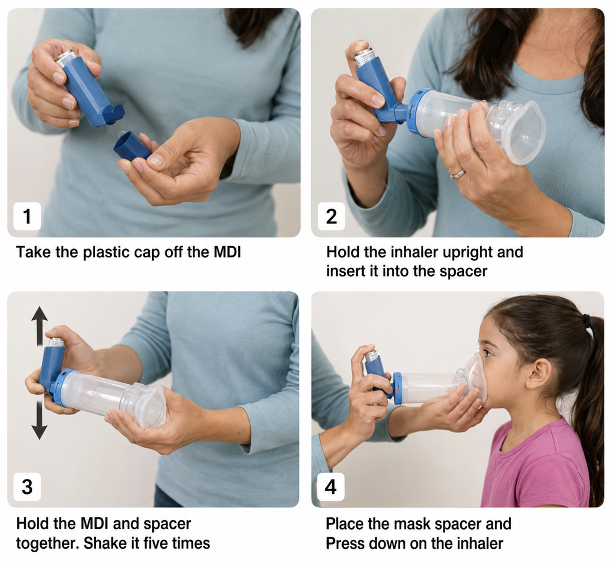
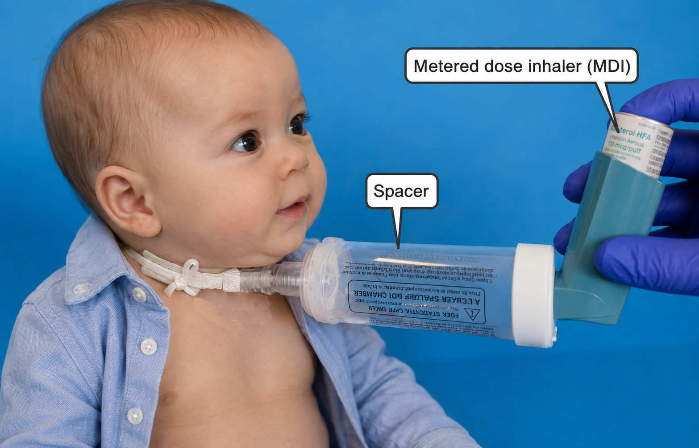
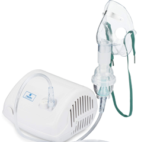
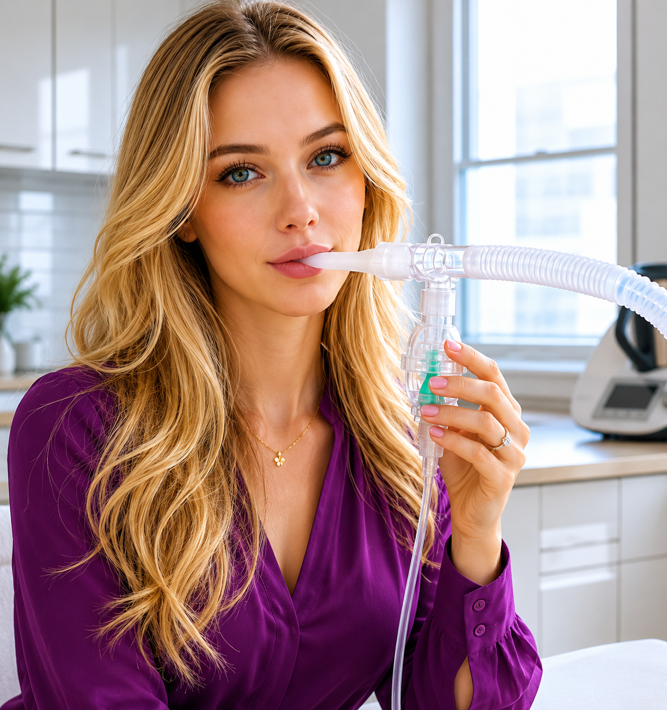
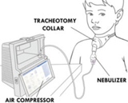

Guía de Terapia con Inhalador MDI y Nebulizador

Niños y Capacidad Limitada de Inhalación- Se utiliza con mascarilla facial cuando los pacientes no pueden formar un sello adecuado en la boquilla.
- Ideal para bebés, niños pequeños y adultos con mala coordinación o debilidad.
- Elimina la necesidad de sincronizar la inhalación con la activación del inhalador.
- Mejora la llegada del medicamento a los pulmones y reduce la pérdida en boca y garganta.
- La mascarilla debe ajustarse bien sobre nariz y boca para evitar fugas del medicamento.
Uso en Adultos
- Recomendado para la mayoría de los adultos para mejorar la técnica del inhalador y la administración del medicamento.
- Elimina problemas de coordinación entre presionar el inhalador e inhalar.
- Permite respiraciones lentas y profundas para una mejor distribución pulmonar.
- Reduce la acumulación de medicamento en la orofaringe.
- Útil durante episodios de dificultad respiratoria.

Uso con Traqueostomía- Puede adaptarse utilizando una mascarilla de traqueostomía o un adaptador espaciador especializado.
- Administra el medicamento directamente a la vía respiratoria evitando las estructuras superiores.
- Útil para pacientes incapaces de utilizar técnicas estándar de inhalación.
- Proporciona una administración más controlada y eficiente comparada con métodos abiertos.
- Requiere supervisión para asegurar un ajuste y efectividad adecuados.

Niños y Capacidad Limitada de Inhalación- Administrado mediante mascarilla cuando los pacientes no pueden usar eficazmente una boquilla.
- Requiere mínima coordinación; el paciente respira normalmente.
- Ideal para niños pequeños, ancianos o pacientes con deterioro cognitivo.
- Proporciona aerosol continuo durante varios minutos.
- El ajuste adecuado de la mascarilla es importante para reducir la pérdida de medicamento.

Uso en Adultos- Puede utilizarse con boquilla (preferido) o mascarilla.
- Efectivo durante dificultad respiratoria moderada o severa.
- Permite administrar dosis más altas de medicamento durante un periodo prolongado.
- No requiere coordinación; respirar normalmente es suficiente.
- Útil cuando la técnica del MDI es difícil.

Uso con Traqueostomía- Administrado mediante collar de traqueostomía o conexión directa al tubo de traqueostomía.
- Evita la vía respiratoria superior para administrar el medicamento directamente a las vías inferiores.
- Utilizado para broncodilatación y manejo de secreciones.
- Proporciona humidificación junto con el medicamento cuando es necesario.
- Una configuración adecuada es esencial para una administración efectiva.